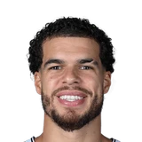
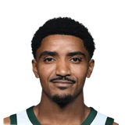
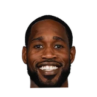

“We were without two starters tonight -- no Gary Harris, no Michael Porter. I don't think we have been whole the whole year. JaMychal Green was out early, Michael Porter has been out with COVID, and Gary was not here due to personal reasons. I think that's one thing that will help us.”

What Michael Malone has said about Michael Porter
Every quote from Michael Malone about Michael Porter in the archive, newest first. Each one links to its original source.
Best quotes
Harrison Wind:Michael Malone on Michael Porter Jr:
“It’s an ongoing thing, trying to figure out what’s going on…I’d still say that Michael’s out for the foreseeable future. We’re trying to take it one day at a time with him and see what the best way to approach getting him back healthy is.”
Michael Malone today on shot selection:
“Michael Porter made a contested mid-range two last night. The spacing was awful, the execution was awful and the shot went in. Poor possession. Poor shot. We can get better than that.”
Quotes per season
2019-202023-24
2023-24
2 quotesMichael Malone on Michael Porter Jr. blaming himself for the Timberwolves' loss:
“I couldn't disagree with Michael more. I don't want Michael putting the series loss on himself.”
Michael Malone on Michael Porter Jr:
“What he's doing has never been done before, from a medical standpoint.”
2022-23
5 quotesFull answer from Michael Malone on Michael Porter Jr.’s spot in the starting lineup NOT being in jeopardy:
“I have zero doubt that Michael Porter is going to win a game for us.”
Harrison Wind:Michael Malone on Michael Porter Jr:
“I have zero doubt that he's going to have a very big coming up here that's going to help us win this championship.”
Michael Malone:
“I think we’re past the point of praising Michael [Porter Jr.] for his defense every game.”
Michael Singer:Michael Malone on MPJ:
“I'm so proud of Michael. ... I'm on him a lot about his defense ... I want him to be the best version of Michael Porter. ... He's showed me that he cares.”
Michael Malone today on shot selection:
“Michael Porter made a contested mid-range two last night. The spacing was awful, the execution was awful and the shot went in. Poor possession. Poor shot. We can get better than that.”
2021-22
3 quotesHarrison Wind:Michael Malone on Michael Porter Jr:
“It’s an ongoing thing, trying to figure out what’s going on…I’d still say that Michael’s out for the foreseeable future. We’re trying to take it one day at a time with him and see what the best way to approach getting him back healthy is.”
Ryan Blackburn:Michael Malone on MPJ’s status:
“Michael could be back in a week. It could be longer than that. When I say foreseeable future, I’m not really sure what that means.”
“Flying around, defensively, rebounding the basketball. The constant message with Michael is ‘Don’t allow your not making shots to impact every other facet of your game,’ because if you allow that, then basically what you’re saying is that, ‘You’re just a specialist.’ … We have much bigger demands of Michael Porter than just being able to make shots.”
2020-21
2 quotesHarrison Wind:Malone:
“I think Michael Porter has to be mentioned for the Most Improved Player in the NBA.”
“We were without two starters tonight -- no Gary Harris, no Michael Porter. I don't think we have been whole the whole year. JaMychal Green was out early, Michael Porter has been out with COVID, and Gary was not here due to personal reasons. I think that's one thing that will help us.”
2019-20
2 quotesMichael Singer:Michael Malone, on his reaction to MPJ missing Rising Stars:
“If Michael Porter is not a rising star in the NBA, I don’t know what the hell a rising star is.”
Harrison Wind:Michael Malone on Michael Porter Jr’s first practice:
“There were moments when he looked, man that guy’s is really talented. And there were moments where he looks like he’s got a ways to go.... I know this year is going to be a lot of ups and downs and we’re going to support him.”
Related
- Everyone on Michael Porter42 quotes
- Michael Malone on everyone318 quotes
 Michael Malone on Nikola Jokic99 quotes
Michael Malone on Nikola Jokic99 quotes- Michael Malone on Jamal Murray31 quotes
 Michael Malone on Isaiah Thomas11 quotes
Michael Malone on Isaiah Thomas11 quotes Michael Malone on DeMarcus Cousins10 quotes
Michael Malone on DeMarcus Cousins10 quotes
Michael Malone on Gary Harris10 quotes
Michael Malone on Will Barton8 quotes Michael Malone on Aaron Gordon7 quotes
Michael Malone on Aaron Gordon7 quotes Michael Malone on LeBron James7 quotes
Michael Malone on LeBron James7 quotes